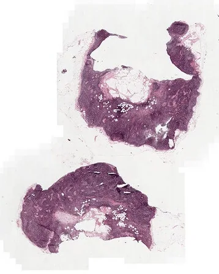
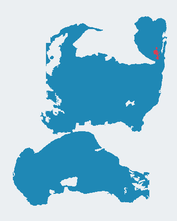
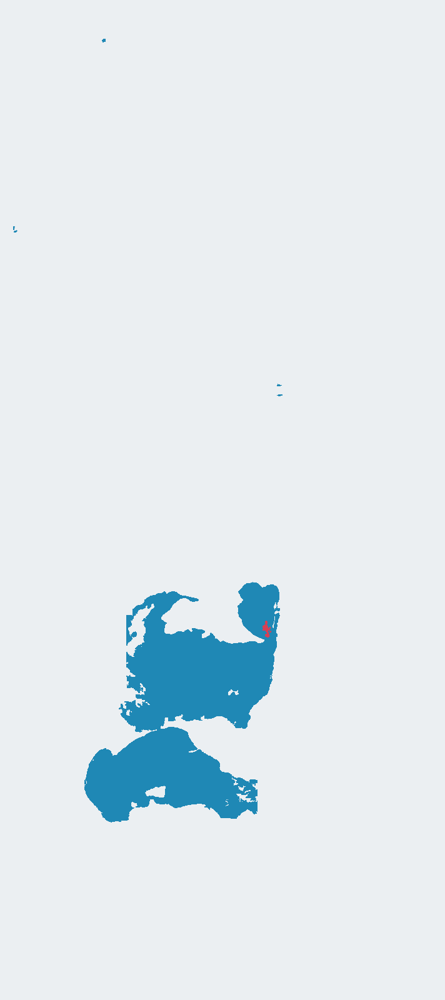

Selected before its expert reference was viewed; the reference is now public on this page. The slide is held out from fitting the current tumor_093-only Bora model. This display does not establish a completed method comparison. The public CAMELYON16 training release supplied this mask; it is not the challenge hidden test set.
- Official code 0: unscored
- Code 1: non-metastatic tissue
- Code 2: metastasis
Registered tissue-area view
The two panels use the same preview crop and dimensions. The annotation is nearest-neighbor sampled for visual inspection; model evaluation uses the full official known-pixel mask, not these preview pixels.



Whole-slide annotation context
This separate full-slide display samples an eightfold grid before retaining each cell’s highest observed code, helping rare metastasis regions remain visible. Colored pixels can look larger than their native area; this image must not be measured or scored.

Download the original official mask from CAMELYON16 AWS. The source mask is hosted by the dataset; this site contains only sampled display images.